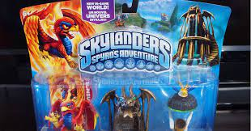
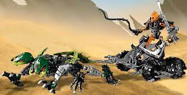

Lego Bionicle and Skylanders played a very important role in my life. I was about 11 Lego and Skylander was something I wanted for my birthday and Chirstmas.During the same year I was ask by my grandparnets what would I like for Chirstmas. I showed them that I wanted a Lego Bionicle. And on Christmas eve party my grandparnets gave me a present and in it was, the lego Bioncle set you see in the image. I put it together whith in the next few days. I eventualy got all the others sets I now have. The Story and toys of Lego Bioncle is something that new Lego set lack. Do to how they repate so often. Example is Lego Ninjago they don't change the villians and the main cast does't change at all. So you are collecting the same figure in each new wave. That is why Lego Bionicle had different heros every so often. I also have to mendtion that my personal favorite Lego Movie is Lego Bionicle The legend Reborn. Here we see How Mata Nui has to live with out his gigant body. And how he starts to fight to reclaim his body. I hope that one day the new generation can experaince the joy of Lego Bionicle.
 